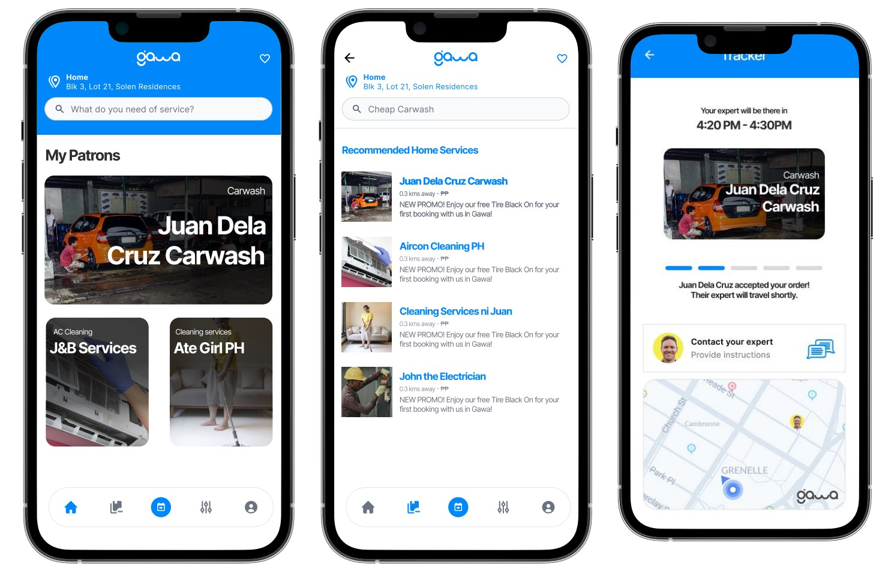
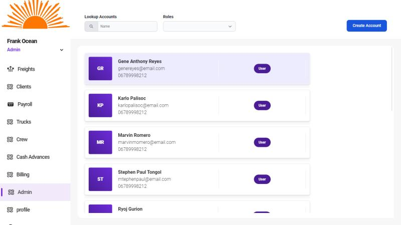

Projects
🏡 Gawa
A home services mobile application featuring a fairness-aware recommendation system that helps users find the best service providers based on their needs and preferences.
Technologies: Google Cloud Platform, Firebase, Flutter
🚍 Trip Management & Payroll System
This web-based system is tailored for logistics' business flow, enabling efficient trip management and payroll calculations.
Technologies: NestJS, PostgreSQL, Docker
🎉 Event Management System
Developed for Mapúa Malayan Colleges Laguna, this website streamlines event management for college organizations.
Technologies: .NET WebForms, Microsoft SQL